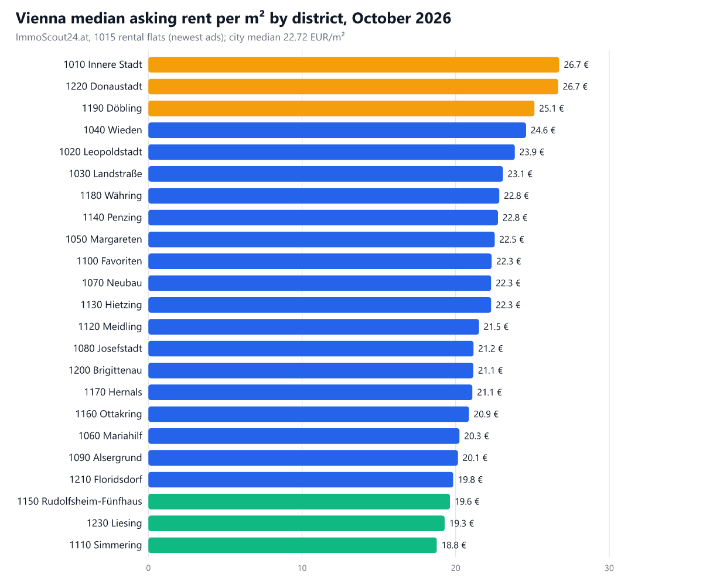
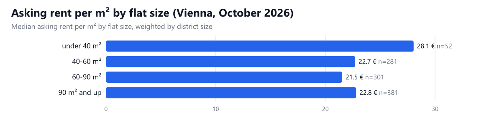

Data reports / Vienna rent per m² by district
Vienna rent prices per sqm by district: October 2026 (live ImmoScout24 data)
Disclosure: I built the Apify Actors used to collect this data. This post was written with AI assistance.
Vienna's median asking rent is €22.72 per m² in October 2026, about €1,590 a month for a typical flat. The most expensive district is Innere Stadt (1010) at €26.74 per m², followed by Donaustadt (€26.67); the cheapest is Simmering (1110) at €18.77.
If you are comparing Vienna districts before a move, negotiating a lease or building a market model, the number you want is rent per square metre by district, and the listing pages do not show it. This report computes it from live ImmoScout24.at rental listings, for all 23 districts, and I will publish a new edition regularly so you can see the change.
Rent per m² by district

Orange: the three most expensive districts. Green: the three cheapest. The grey figure is the change against the previous edition (this is the first edition, so there is none yet, shown as a dash).
| Postcode | District | Median €/m² | Middle half (25%-75%) | Median rent €/month | Median size m² | Rental flats on the portal | Change in median €/m² |
|---|---|---|---|---|---|---|---|
| 1010 | Innere Stadt | 26.74 | 22.89 - 30.67 | 3,448 | 147 | 211 | – |
| 1220 | Donaustadt | 26.67 | 22.05 - 34.53 | 1,532 | 59 | 628 | – |
| 1190 | Döbling | 25.13 | 22.74 - 30.89 | 2,548 | 95.9 | 217 | – |
| 1040 | Wieden | 24.58 | 22.77 - 32.59 | 3,860 | 148.3 | 87 | – |
| 1020 | Leopoldstadt | 23.85 | 21.46 - 29.15 | 1,834 | 75.9 | 124 | – |
| 1030 | Landstraße | 23.08 | 20.00 - 24.64 | 1,699 | 81.8 | 476 | – |
| 1180 | Währing | 22.84 | 21.27 - 25.58 | 2,850 | 131.9 | 117 | – |
| 1140 | Penzing | 22.75 | 18.35 - 26.11 | 1,490 | 70 | 117 | – |
| 1050 | Margareten | 22.54 | 19.02 - 25.54 | 1,600 | 66.4 | 74 | – |
| 1100 | Favoriten | 22.34 | 20.31 - 23.66 | 1,125 | 50.8 | 395 | – |
| 1070 | Neubau | 22.31 | 20.05 - 24.33 | 2,129 | 97.6 | 72 | – |
| 1130 | Hietzing | 22.31 | 19.48 - 26.52 | 1,542 | 74 | 116 | – |
| 1120 | Meidling | 21.52 | 18.63 - 23.37 | 1,249 | 58.8 | 119 | – |
| 1080 | Josefstadt | 21.16 | 19.92 - 24.11 | 2,309 | 102.1 | 47 | – |
| 1200 | Brigittenau | 21.15 | 17.75 - 27.64 | 1,545 | 68.8 | 137 | – |
| 1170 | Hernals | 21.09 | 18.52 - 23.65 | 1,598 | 69.1 | 59 | – |
| 1160 | Ottakring | 20.87 | 18.49 - 22.98 | 1,149 | 54.2 | 78 | – |
| 1060 | Mariahilf | 20.25 | 17.84 - 25.23 | 2,148 | 94.5 | 71 | – |
| 1090 | Alsergrund | 20.15 | 17.91 - 24.47 | 1,972 | 81 | 75 | – |
| 1210 | Floridsdorf | 19.84 | 18.09 - 22.06 | 1,049 | 53.1 | 340 | – |
| 1150 | Rudolfsheim-Fünfhaus | 19.63 | 18.09 - 25.51 | 1,435 | 65 | 89 | – |
| 1230 | Liesing | 19.28 | 17.81 - 21.05 | 1,199 | 63.6 | 119 | – |
| 1110 | Simmering | 18.77 | 16.99 - 20.40 | 1,141 | 63.5 | 112 | – |
Rent per m² by flat size: under 40 m² cost the most

- under 40 m²: €28.05 per m² (median rent €900 a month, 52 listings)
- 40-60 m²: €22.72 per m² (median rent €1,099 a month, 281 listings)
- 60-90 m²: €21.53 per m² (median rent €1,598 a month, 301 listings)
- 90 m² and up: €22.80 per m² (median rent €3,148 a month, 381 listings)
The under 40 m² band is the most expensive per square metre (€28.05) and the 60-90 m² band the cheapest (€21.53). A small flat is a cheaper flat per month, not per square metre, so compare districts using flats of the same size.
How this was measured
- Source: the ImmoScout24 Austria Scraper on Apify, run on 2026-10-22 with a fixed input: all 23 Vienna postcodes, rent, flats, sorted newest first, the newest 50 listings per district (1015 listings in total after removing duplicates, implausible rows and listings beyond the agency cap). The portal itself listed 3,880 rental flats in Vienna that day (column "Rental flats on the portal").
- Asking rents, not contracts: these are the rents advertised by landlords and agents, as ImmoScout24 shows them (monthly rent including operating costs). Signed contracts, old tenancies and regulated rents are lower.
- City median: each listing is weighted by how many rental flats its district has on the portal, so small districts do not count as much as large ones.
- No single advertiser decides a district: one agency or developer counts for at most 5 listings per district, because a developer who posts a whole new-build block on one day would otherwise set the median of its district (listings used per district: 30 to 50).
- Aggregates only: no landlord names, streets or listing texts are used or published here.
- Caveat 1: peripheral districts with a lot of new-build rental supply can rank higher than their address suggests; the data used here does not separate new-builds from older flats.
- Caveat 2: the newest 50 listings are a sample of a district's market, not all of it. Differences of a euro between neighbouring districts are within noise; the gaps of five euros and more are not.
How to get this data yourself, every day
Everything above was collected by an Apify Actor from a fixed input, plus some arithmetic. You can run the same collection on your own Apify account in a couple of clicks:
- ImmoScout24 Austria Scraper: $1.50 per 1,000 results on the free plan, you pay only for results delivered.
Collecting the data for this edition costs about $1.73 on Apify's free plan (you pay per result delivered, nothing for a search that returns nothing), so a monthly refresh costs about the same.
Daily monitor in three steps:
- Open the Actor, paste an input like the one below, and switch on Only new (
onlyNew). The first run returns everything; every later run returns only what no earlier run of the same watch list delivered, and skipped items are not charged. - Save the input as a task and put it on a schedule (for example the cron expression
0 7 * * *, every day at 07:00 UTC). - Send the result where you work: e-mail, Slack or Google Sheets, from the task's Integrations tab.
{
"locations": [
"Wien"
],
"transaction": "rent",
"propertyType": "flat",
"sortBy": "newest",
"maxListingsPerSearch": 100,
"onlyNew": true,
"monitorKey": "vienna-rent-flats"
}
Want the numbers for your own street, price range or flat size? Open the ImmoScout24 Austria Scraper on Apify, set the district and filters, and run it: the input form is prefilled, one click starts a run, and the dataset comes back as CSV, Excel or JSON.
Next edition: this report is rebuilt monthly with the same method, so changes between editions are real changes. Bookmark the latest edition or the reports hub, or run the monitor above if you would rather have new items delivered automatically.
More copy-paste examples (Python, n8n workflow, LangChain tool): ImmoScout24 Austria integration examples on GitHub
All editions
- 22 October 2026 (latest)